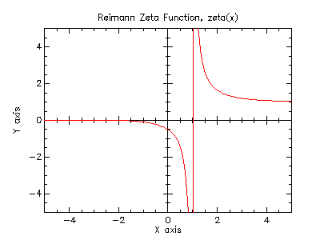

Another important contribution of Riemann is his work with number theory. In 1859 he demonstrated how to use the zeta function as a complex function. When working with the distribution of prime numbers, Riemann conjectured that both trivial and nontrivial zeros lie on the critical line; this was known as the Riemann hypothesis.

Other uses for the Riemann Zeta Function include: number theory, physics, probability theory, and statistics.